Rekall and the windows pfn database
This article was copied from the Rekall Forensics blog, posted on 2016-05-24. Copied with permission for historical preservation.
Rekall has long had the capability of scanning memory for various signatures. Sometimes we scan memory to try and recover pool tags (e.g. psscan), other times we might scan for specific indicators or Yara rules (e.g. yarascan). In the latest version of Rekall, we have dramatically improved the speed and effectiveness of these capabilities. This post explains one aspect of the new Rekall features and how it was implemented and can be used in practice to improve your forensic memory analysis.
Traditionally one can scan the physical address space, or the virtual address space (e.g. the kernel's space or the address space of a process). There are tradeoffs with each approach. For example, scanning physical memory is very fast because IO is optimized. Large buffers are read contiguously from the image and the signatures are applied on entire buffers. However, traditionally, this kind of scanning could only yield a result when a signature was found but did not include any context to the hit, which means that it is difficult to determine which process owned the memory and what the process was doing with the memory.
If we scan the virtual address space we see memory in the same way that a process sees it. This is ideal because if a signature is found, we can immediately determine which process address space it appears in, and precisely where, in that address space, the signature resides.
Unfortunately, scanning in a virtual address space is more time consuming because reading from the image (or live memory) is non-sequential. Rekall effectively has to glue together in the right order a bunch of page size buffers collected randomly from the image into a temporary buffer which can be scanned - this involves a lot of copying buffers and allocating memory. Additionally when scanning the address space of processes, we will invariably be scanning the same memory multiple times because mapped files (like DLLs) are shared between many processes, and so they appear in multiple processes' virtual address space.
It would be awesome if we could ask: given a physical address (i.e. offset in the memory image), which process owns this page and what is the virtual address of this page in the process address space? Being able to answer this question quickly allows us to scan physical memory in the most efficient way (at least for smallish signatures which do not span page boundaries).
Rekall has a plugin called pas2vas which aims to solve this problem. It is a brute force plugin: simply enumerate all the virtual address to physical address mappings and build a large reverse mapping. This works well enough, but takes a while to construct the reverse mapping and because of this does not work well on live memory which is continuously changing.
Have you ever used the RamMap.exe tool from sysinternals? It's an awesome tool which lets one see what each physical page is doing on your system. Here is an example screenshot (click on the image to zoom in):
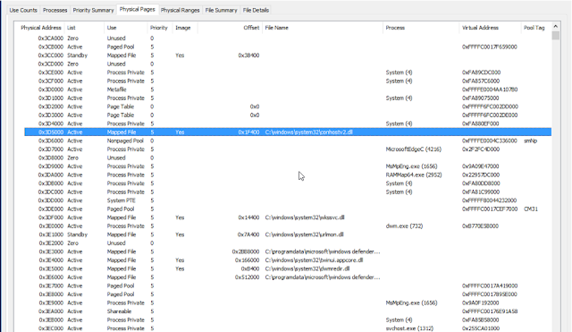
This looks exactly like what we want! How does this magic work? Through understanding and parsing the Windows PFN database (Windows Internals) it is possible to relate a physical address directly to the virtual address in the process which owns it very quickly and efficiently. If only we had this capability in Rekall we could provide sufficient context to scanners in physical memory to work reliably and quickly!
Lets explore how one can use the Windows PFN database to ask exactly what each physical page is doing. In the end we implemented new plugins such as "pfn", "p2v" and "rammap" to shed more light on how physical memory is used within the Windows operating system. These plugins are integrated with other plugins (e.g. yarascan to assist in providing more contextual information for physical addresses).
Windows page translation
We all know about the AMD64 page tables and how they work so I won't go into it in too much depth here. Just to say that the hardware needs page tables to be written in memory, which control how the page resolution process works. The CR3 register contains the Directory Table Base (DTB) which is the address of the top most table.
The hardware then traverses these tables, by masking bits off the virtual address until it reaches the PTE which contains information about the physical page representing that virtual address. The PTE may be in a number of states (which we described in detail in previous posts and are also covered in the Windows Internals book). In any state other than the "Valid" state, the hardware will generate a page fault to find the actual physical page.
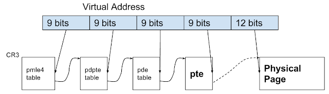
Rekall has the "vtop" plugin (short for virtual-to-physical) to help visualize what page translation is doing. Let us take for example a Windows 7 image:
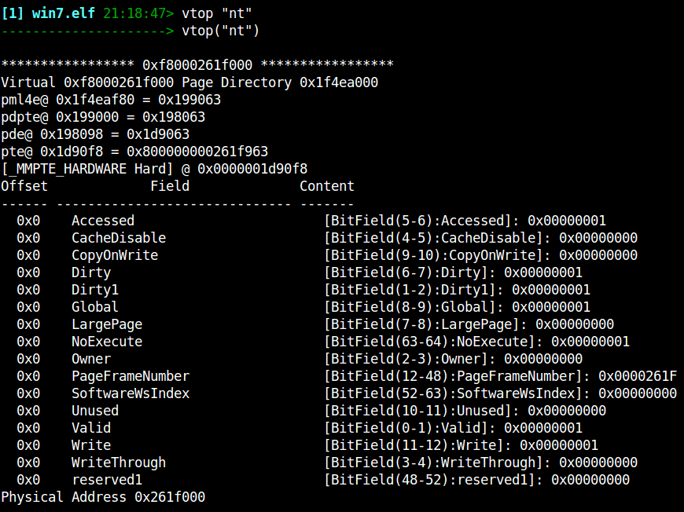
Here we ask Rekall to translate the symbol for "nt" (The kernel's image base) in the kernel address space into its physical address. Rekall indicates the address of each entry in the 4 level page table and finally prints the PTE content in detail. We can see that the PTE for this symbol is a HARDWARE PTE which is valid (i.e. the page exists in physical memory) and the relevant page frame number is shown (i.e. physical address).
The important points to remember about page translation are:
- The page tables are primarily meant for the hardware. Addresses for valid pages in the page tables are specified as Page Frame Numbers (PFN) which means they are specified in the physical address space. This is the only thing the MMU can directly access.
- On the other hand, the CPU cannot access physical memory. All CPU access occurs through the virtual address space of the kernel.
- Invalid PTEs may carry any data to be used by the kernel, therefore typically those addresses are specified in the kernel's virtual address space.
- All PTEs (and all parts of the page tables) must be directly mapped into the kernel's address space at all times so that the kernel may manipulate them.
Each PTE controls access to exactly one virtual memory page. The PTE is the basic unit of control for virtual pages, and each page in any virtual address space must have at least one PTE controlling it (This is regardless if the page is actually mapped into physical memory or not - the PTE will indicate where the page can be found).
There are two types of PTEs - hardware PTE and prototype PTEs. Prototype PTEs are used by the kernel to keep track of intended page purpose, and although they have a similar format to hardware PTEs, they are never accessed directly by the MMU. Prototype PTEs are allocated from pool memory, while hardware PTEs are allocated from System PTE address range.
Section objects
Consider a mapped file in memory. Since the file is mapped into some virtual address space, some pages are copied from disk into physical memory, and therefore there are some valid PTEs for that address space. At the same time, other pages are not read from disk yet, and therefore must have a PTE which points at a prototype PTE.
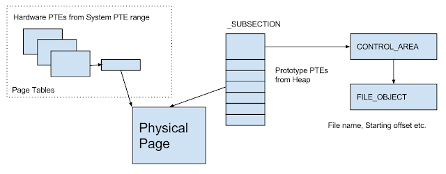
The _SUBSECTION object is a management structure which keeps track of all the mapped pages of a range from mapped files. The _SUBSECTION object has an array of prototype PTEs - a management structure similar to the real PTE.
Consider the figure above - a file is mapped into memory and Windows creates a _SUBSECTION object to manage it. The subsection has a pointer to the CONTROL_AREA (which in turn points to the FileObject which it came from) and pointers to the Prototype PTE array which represents the mapped region in the file. In this case a process is reading the mapped area and so the hardware PTE inside the process is actually pointing at a memory resident page. The prototype PTE is also pointing at this page.
Now imagine the process gets trimmed - in this case the hardware PTE will be made invalid and point at the prototype PTE. If the process tries to access the page again a page fault will occur and the pager will consult the prototype PTE to determine if the page is still resident. Since it is resident the hardware PTE will be just changed back to valid and continue to point at that page.
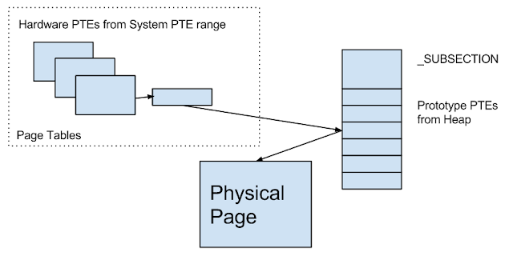
Note that in this situation, the physical page still contains valid file data, and it is still resident. It's just that the page is not directly mapped in any process. Note that it is perfectly OK to have another process with a valid hardware PTE mapping to the same page - this happens if the page is shared with multiple processes (e.g. a DLL) - one process may have the page resident and can access it directly, while another process might need to invoke a page fault to access this page (which should be extremely quick since the page is already resident).
The Page File Number Database (PFN)
In order to answer the question: What is this page doing? Windows has the Page File Number database (PFN Db). It is simply an array of _MMPFN structs which starts at the symbol "nt!MmPfnDatabase" and has a single entry for every physical page on the system. The MMPFN struct must be as small as possible and so consists of many unions and can be in several states - depending on the state, different fields must be interpreted.
Free, Zero and Bad lists
We start off with discussing these states - they are the simplest to understand. Pages which can take on any of these states (A flag in the _MMPTE.u3.e1.PageLocation) are kept in their own lists of Free pages (ready to be used), Zero pages (already cleared) or Bad pages (will never be used).
Active Pages: PteAddress points at a hardware PTE
If the PFN Type is set to Active, then the physical page is used by something. The most important thing to realize is that a valid physical page (frame) must be managed by a PTE. Since that PTE record must also be accessible to the kernel, it must be mapped in the kernel's virtual address space.
When the PFN is Active, it contains 3 important pieces of information:
- The virtual address of the PTE that is managing this physical page (in _MMPFN.PteAddress).
- The Page Frame (Physical page number) of the PTE that is managing this physical page (in _MMPFN.u4.PteFrame). Note these two values provide the virtual and physical address of the PTE.
- The OriginalPte value (usually the prototype PTE which controls this page). When Windows installs a hardware PTE from a prototype PTE, it will copy the original prototype PTE into this field.
Here is an example of Rekall's pfn plugin output for such a page:
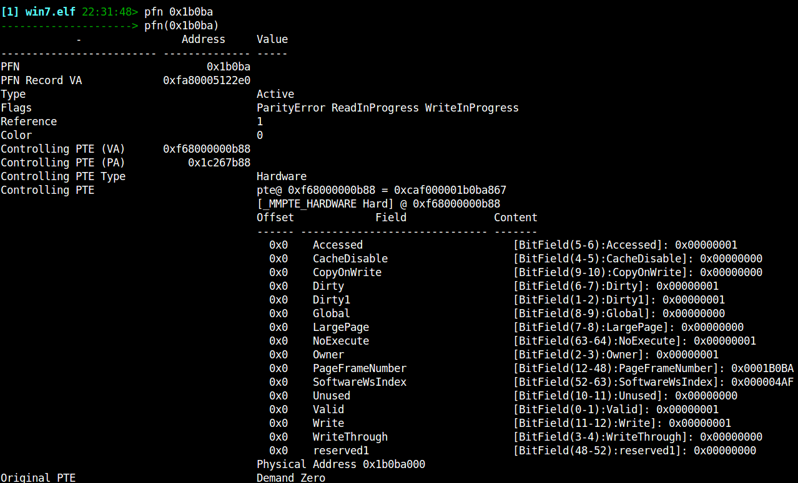
The interesting thing is that in this case, the PTE that is managing this page will belong in the Hardware page tables created for the process which is using this page. That PTE, in turn will also be accessible by a PDE inside that process's page tables, and so forth. This occurs all the way up to the root of the page table (DTB or CR3) which is its own PTE.
Therefore if we keep following the PTE which controls each PTE 4 times we will discover the physical addresses of the DTB, PML4, PDPTE, PDE and PTE belonging to the given physical address. Since a DTB is unique to a process we immediately know which process owns this page.
Additionally we can also figure out what is the virtual address by subtracting the table offset of the real PTE from the start of the PTE table at each level of the paging structure, and assigning the relevant bits to that part of the virtual address. This is illustrated below.
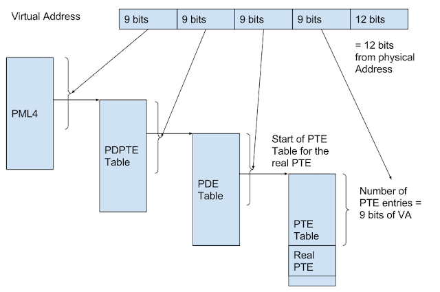
So when the PFN is in this state (i.e. PteAddress pointing to a Hardware PTE) we can determine both the virtual address of this page and the process which maps it. It is also possible that another process is mapping the same page too. In this case the OriginalPTE will actually contain the _MMPTE_SUBSECTION struct which was originally filled in the prototype PTE. We can look at this value and determine the controlling subsection in a similar way to the below method.
Rekall's ptov plugin (short for physical-to-virtual) employs this algorithm to derive the virtual address and the owning process. Here is an example
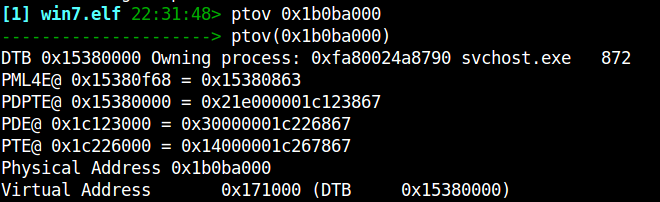
We can verify this works by switching to the svchost.exe process context and converting the virtual address to physical. We should end up in the same physical address we started with:
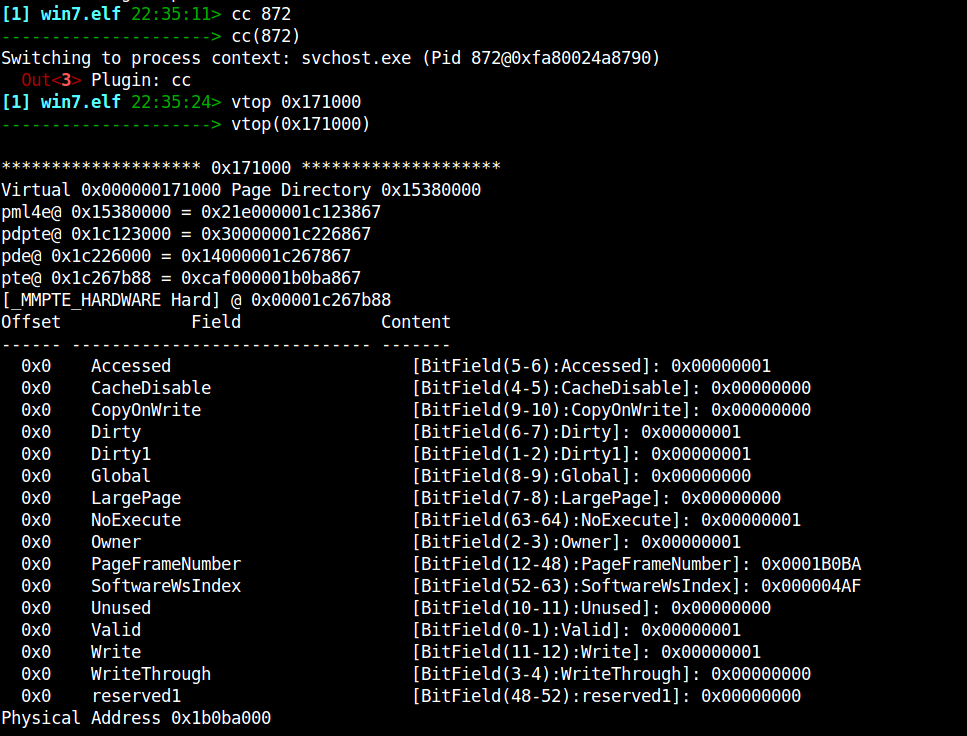
Active Pages - PteAddress points at a prototype PTE
Consider the case where two or more processes are sharing the same memory (e.g. mapping the same file). In order to aid in the management of this, Windows will create a subsection object as described earlier; if the virtual page is trimmed from the working set of one process, the hardware PTE will not be valid and instead point at the controlling subsection's prototype PTE.
In this case the PFN database will point directly at the prototype PTE belonging to the controlling subsection (The PFN entry will indicate that this is a prototype PTE with the _MMPFN.u3.e1.PrototypePte flag). Lets look at an example:
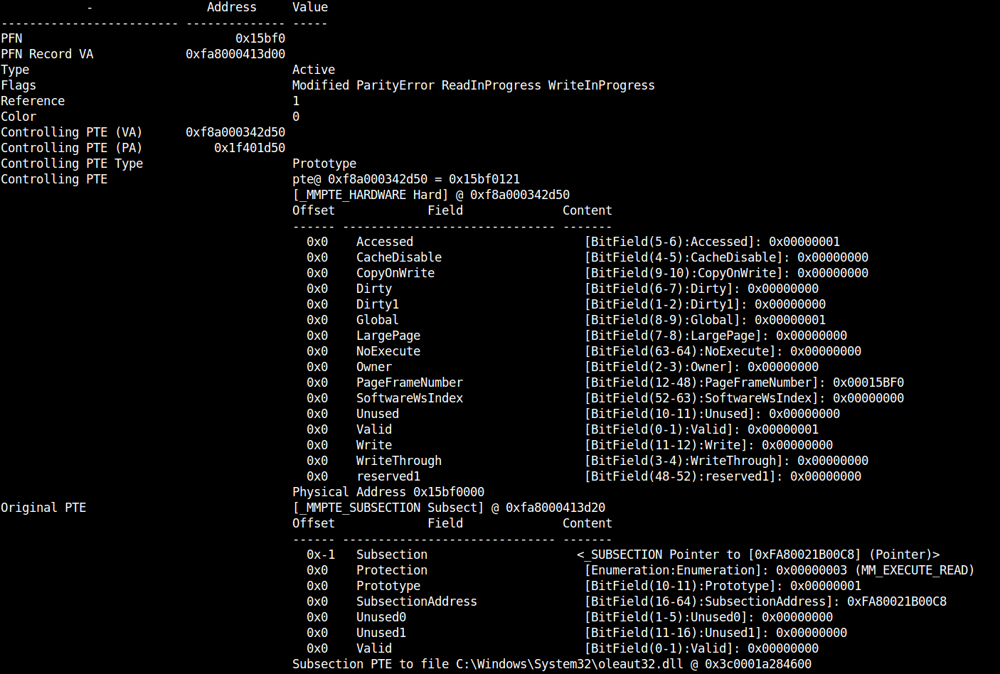
In this example, the PFN record indicates that a prototype PTE is controlling this physical page. The prototype PTE itself indicates that the page is valid and mapped into the correct physical page. Note that the controlling PTE for this page is allocated from system pool (0xf8a000342d50) while in the previous example, the controlling prototype was from the system PTE range (0xf68000000b88) and belonged to the process's hardware page tables.
If we tried to follow the same algorithm as we did before we will actually end up in the kernel's DTB because the prototype PTE is itself allocated from paged pool (so its controlling PTE will belong to the kernel's page tables). So in this case we need to identify the relevant subsection which contains the prototype PTE (and the processes that maps it).
When a process maps a file, it receives a new VAD region. The _MMVAD struct stores the following important information:
- The start and end virtual addresses of the VAD region in the process address space.
- The Subsection object which is mapped by this VAD region.
- The first prototype in the subsection PTE array which is mapped (Note that VADs do not have to map the entire subsection, the first mapped PTE can be in the middle of the subsection PTE array. Also the subsection itself does not have to map the entire file either - it may start at the _SUBSECTION.StartingSector sector).
The _MMPFN.PteAddress will point at one of the Prototype PTEs. We build a lookup table between every VAD region in every process and its range of prototype PTEs. We are then able to quickly determine which VAD regions in each process contain the pointed to PTE address, and so we know which process is mapping this file.
The result is that we are able to list all the processes mapping a particular physical page, as well as the virtual addresses each use for it (using the _MMVAD information). We also can tell which file is mapped at this location (from the _SUBSECTION data and the filename) and the sector offset within the file it is mapped to. Here is the Rekall output for the ptov plugin:
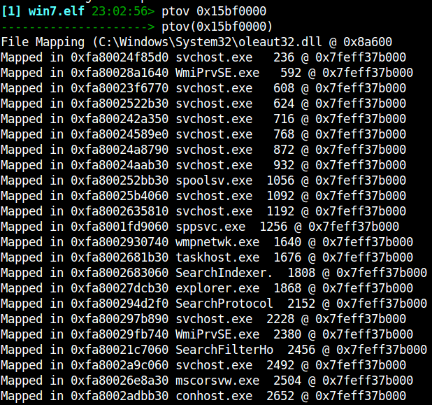
Rekall is indicating that this page contains data from the oleaut32.dll at file offset 0x8a600. And as you can see in the output this data is shared with a large number of processes.
Putting it all together
We can utilize these algorithms to provide more context for scanning hits in the physical address space. Here is an example where I search for my name in the memory image using the yarascan plugin:
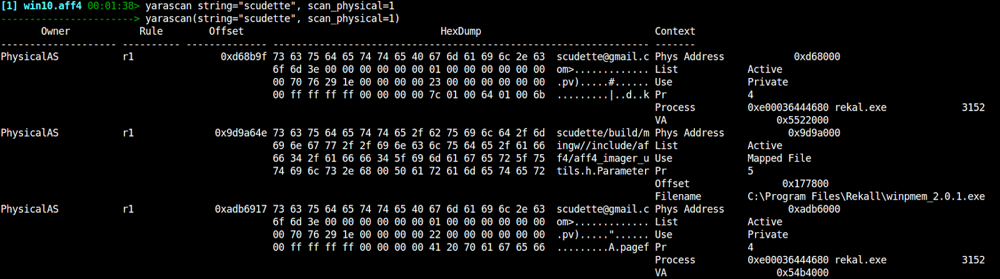
The first hit shows that this page belong to the rekall.exe process, mapped at 0x5522000. The second hit occurs at offset 0x177800 inside the file called winpmem_2.0.1.exe etc.
This information provides invaluable context to the analyst and helps reasoning about why these hits occur where they do.
The rammap plugin aims to display every page and what it is being used for (Click below to zoom in). We can some pages are owned by processes, some are shared by files and others belong to the kernel pools:
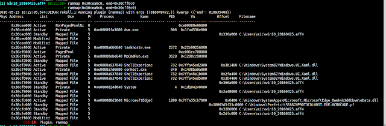
Other applications: Hook detection
Inline hooking is a very popular way to hijack the execution path in a process or library. Malware typically injects foreign code into a process then overwrites the first few bytes of some critical functions with a jump instruction to detour into its code. When the API function is called, the malware hijacks execution and then typically relays the call back to the original DLL to service the API call. For example it is a common way to hide processes, files or network connections.
Here is an example output from Rekall's hooks_inline plugin which searches all APIs for inline hooks.
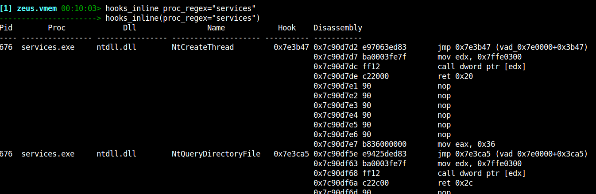
In this sample of Zeus (taken from the Malware Analyst's Cookbook), we can clearly see a jump instruction to be inserted at the start of critical functions (e.g. NtCreateThread) for Zeus to monitor calls to these APIs. Rekall detects the hooks by searching the first few instructions for constructs which divert the flow of execution (e.g. jump, push-ret etc).
Let us consider what happens in the PFN database when Zeus installs these hooks. Before the hook installation. the page containing the functions is mapped to the DLL file from disk. When Zeus installs the trampoline by writing on the virtual memory, Windows changes the written virtual page from file backed to a private mapping. This is often called copy-on-write semantics - Windows makes a copy of the mapped file private to the process whenever the process tries to write to the page. Even if the page is shared between multiple processes, only the process which wrote to it would see these changes.
Let's examine the PFN record of the hooked function. First we switch to the process context, then find the physical page which backs the function "ntdll!NtCreateThread" (Note we can use the function's name interchangeably with the address for functions Rekall already knows about).
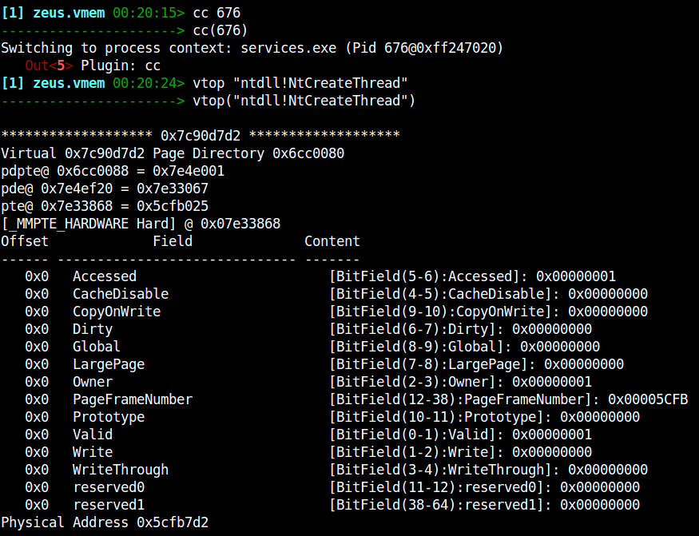
Now let's display the PFN record (Note that a PFN is just a physical address with the last 3 hex digits removed):
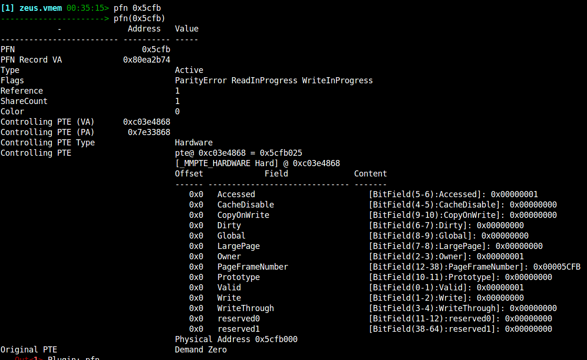
Notice that the controlling PTE is a hardware PTE (which means it exists in the process's page tables). There is only a single reference to this page which means it is private (Share Count is only 1).
Let's now examine the very next page in ntdll.dll (The next virtual page is not necessarily the next physical page so we need to repeat the vtop translation - again we use Rekall's symbolic notation to refer to addresses):
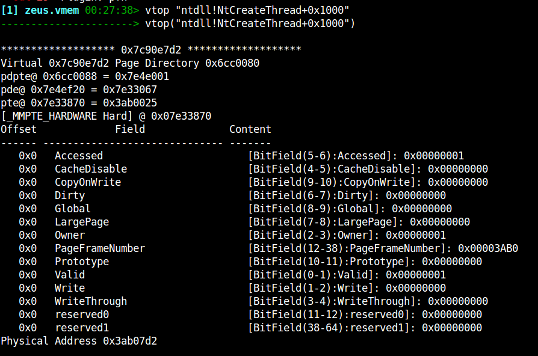
And we examine the PFN record for this next page:
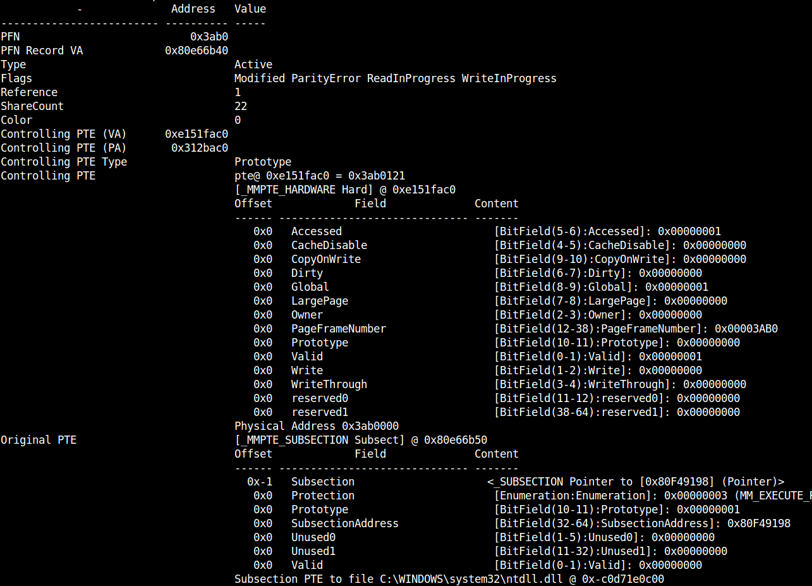
It is clearly a prototype page, which maps a subsection object. It is shared with 22 other processes (ShareCount = 22). Let's see how this physical page is mapped in the virtual address:
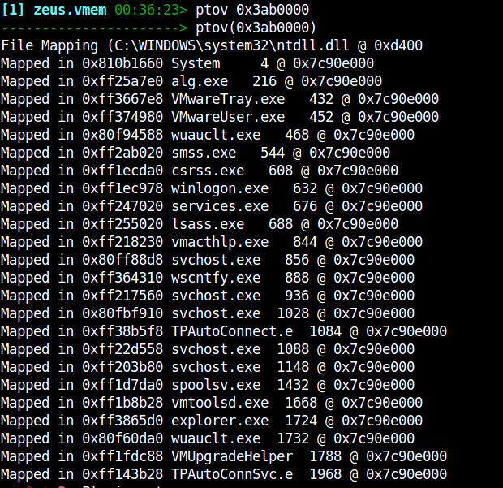
So the takeaway from this exercise is that by installing a hook, Zeus has converted the page from shared to a private mapping. If we assume that Zeus does not change files on disk, then memory only hooks can only exist in process private pages and not in shared file pages. It is therefore safe to skip shared pages in our hook analysis. This optimization buys a speedup of around 6-10 times for inline hook inspection - all thanks to the Windows PFN database!